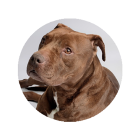
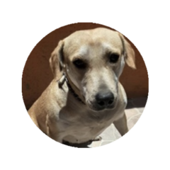
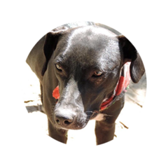
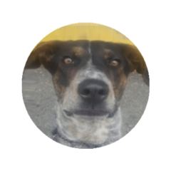
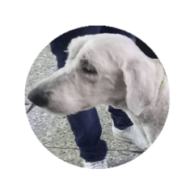

| imagen | Nombre del perro | Descripción |
|---|---|---|
|  | |
rescatado luego de ser amarrado a un basurero. |
|  | |
con sarna en el 80% de su cuerpo, además, presentaba una desnutrición severa y actualmente tiene 2 años y 8 meses. |
|  | |
gran manifestacion que se encontraba en las cernanias y actualmente tiene 4 años y 3 meses. |
|  | |
muchos acontecimientos llegon a nuestro hogar |
|  | |
dioses perros egipcios y por cosas del destino llego a nuestro hogar. |